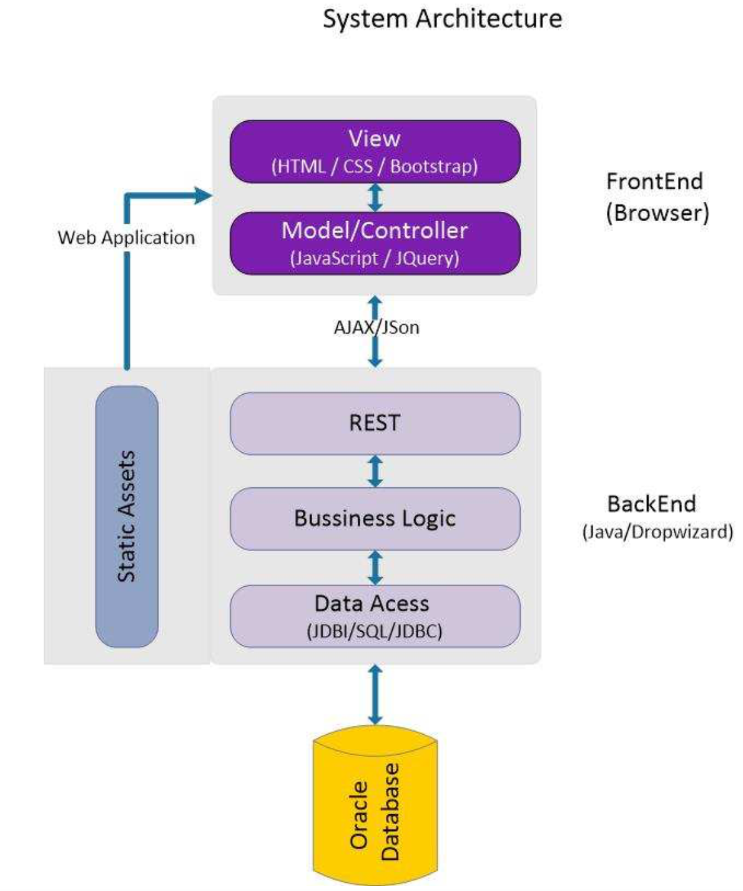

Project Details
Part One
The following graph is the System Architecture for class project. It would help you to understand how the whole process works and it also indicates the languages and the frameworks we are going to use.
The main used language is JAVA, HTML, CSS, JavaScript, JQuery or Bootstrap, the framework we use is Dropwizard.
Part Two
To identify and organize system requirements, the class project Interactive Students/Faculties Networking system has been divided into three large parts – user management, course management, and discussion group management, as following: